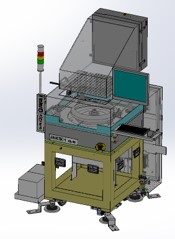
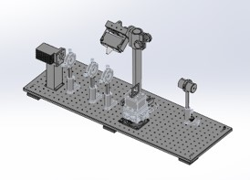
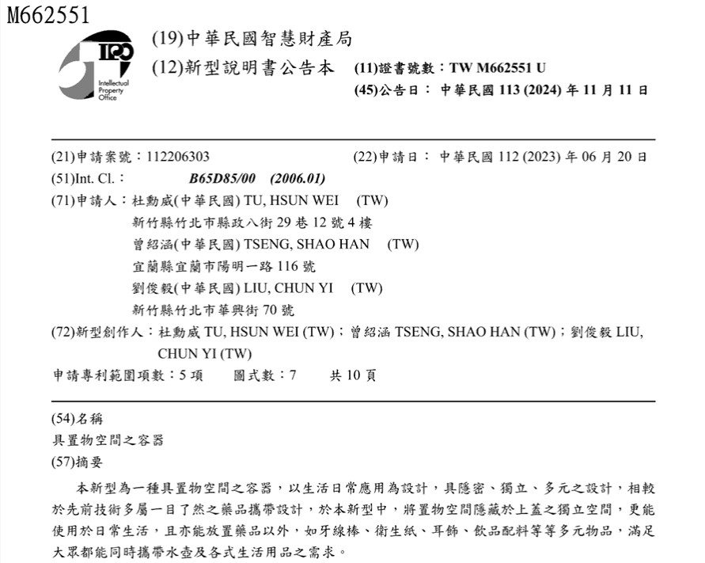

Die Cleaning Machine — World First
Mechanism + process layout designed solo; deployed technology now protected by my invention patents.
OpenA robot needs mechanics, electronics, firmware, and someone who can defend the ideas on paper. I do all four.
Semiconductor equipment designed end-to-end: chip cleaning machine, debonding platform, UV de-gluing machine, precision modules.
ARM Cortex-M on ST MCUs. Sensorless BLDC control with zero-crossing detection; CubeMX + Keil workflow.
Four years of prior-art search and drafting. Filed a utility patent solo — from first claim to grant.
PX4-based quadcopter development — autonomous takeoff, mission planning, return-to-home via ground control station.
Some run inside TSMC production lines. Some fly. All of them started as a blank drawing.

Mechanism + process layout designed solo; deployed technology now protected by my invention patents.
Open

Zero-crossing commutation firmware written from scratch — spec'd with the client, tuned until it sang.
Open
Mission planning, autonomous takeoff and return-to-home on a PX4 quadcopter platform.
Open
Laser + photomultiplier optical path catching particles invisible to the eye — designed and validated end-to-end.
Open
Search-certified. Multiple filings across pet-care devices and semiconductor equipment — plus one cup, drafted solo.
OpenRobotics builds off the clock — with full source, simulation and schematics you can dig into.
A Jetson Orin Nano brain over an STM32 driver board, driving brushed DC motors. Gazebo & MuJoCo sims, CubeMX pin maps, Keil firmware, ROS2 nodes and schematics — all in one place.
Every chapter so far — precision mechanics, optics, motor control, flight systems — has been a joint in the same arm. My goal is to bring them together and build robots: machines that sense, decide, and move. From Taiwan, where the world's machines are already born.